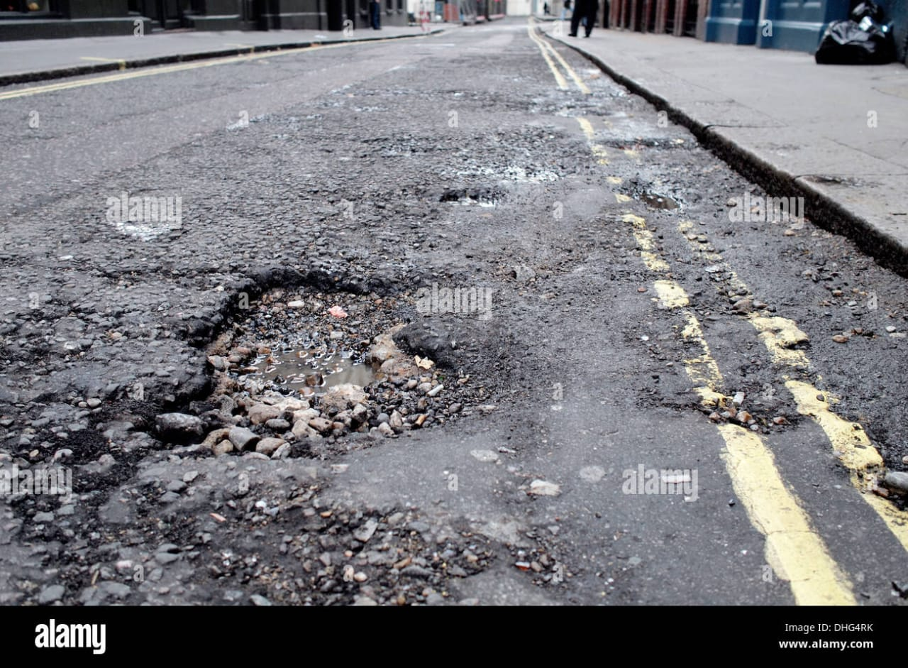

NEWS REPORT OF ROAD ACCIDENT OF MUMBAI AND THANE DISCTRICT
Published on January 1, 2023
Report on Roads of Mumbai and Thane:Mumbai, the financial capital of India, and Thane, a rapidly developing city, are interconnected in many ways, especially via their road networks. Efficient transportation is crucial for economic growth, making it essential to analyze the current state of roads in these region The road network of Mumbai and Thane spans over hundreds of kilometers, incorporating a mixture of national highways, state highways, and urban roads. The road system is vital for connecting urban centers, suburbs, and industrial zones.
- express highway Eastern Express Highway (EEH): A major arterial route in Mumbai, facilitating easy access to Thane. Western Express Highway (WEH): Connects north and south Mumbai and is crucial for traffic heading to and from Thane. Thane-Belapur Road: A significant corridor for the industrial belt leading to Navi Mumbai. Airoli Bridge: This bridge connects Thane with Navi Mumbai and plays a key role in alleviating local traffic congestion.
- Traffic Management and Conditions Mumbai and Thane experience heavy traffic, especially during peak hours. Key congestion points include: The junctions on the Eastern and Western Express Highways. Areas around major shopping districts and commercial hubs. Leveraging technology like CCTVs and traffic signal automation has been key in managing these situations. Road conditions vary significantly; while major thoroughfares are generally well-maintained, many local roads suffer from potholes and wear. There is a continuous effort to upgrade lighting, signage, and pedestrian facilities, but issues persist, especially during the monsoon. The increasing number of vehicles has led to frequent bottlenecks. Road safety remains a concern, with high accident rates in areas lacking proper pedestrian crossings. Additionally, the monsoon season exacerbates problems, leading to flooding and worsened road conditions.